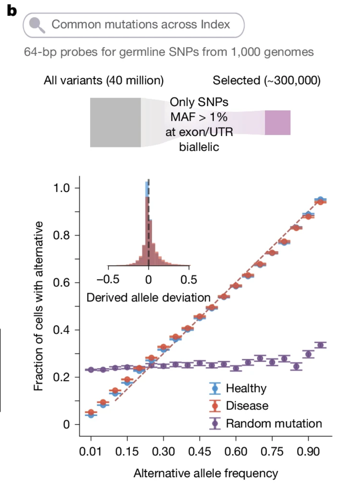
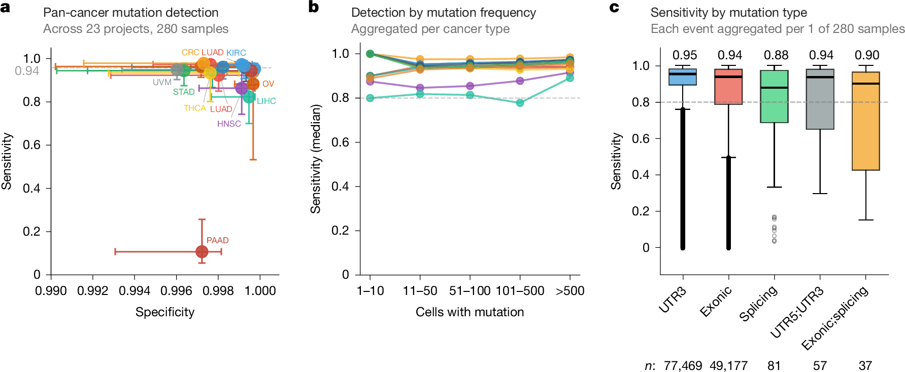
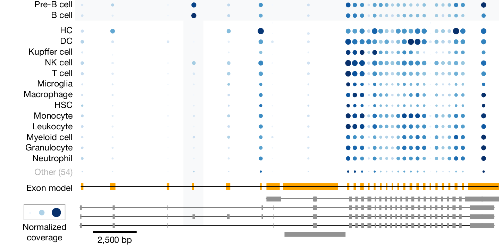
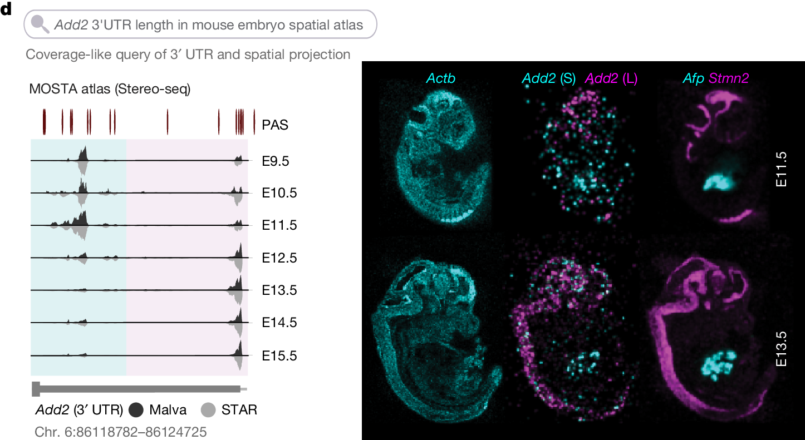
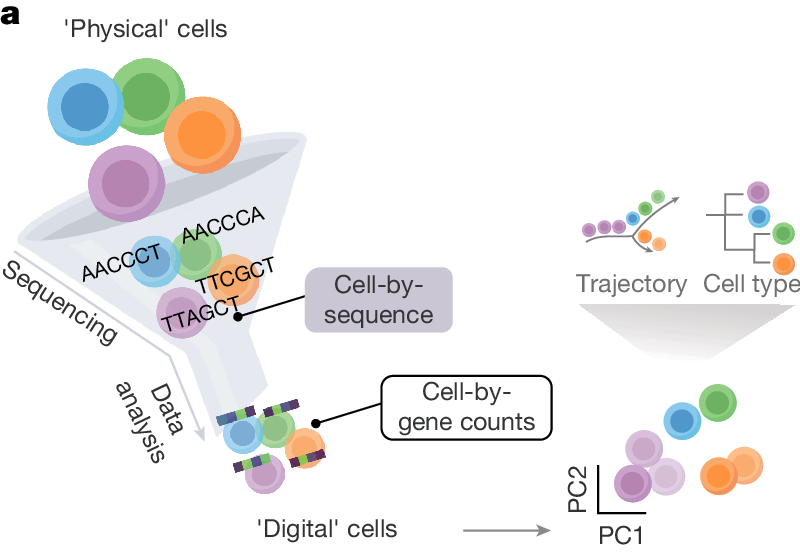
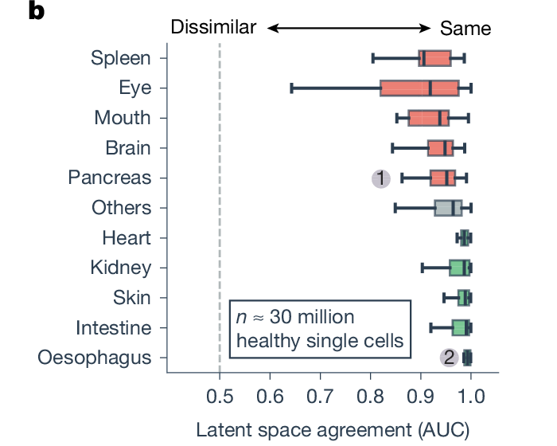
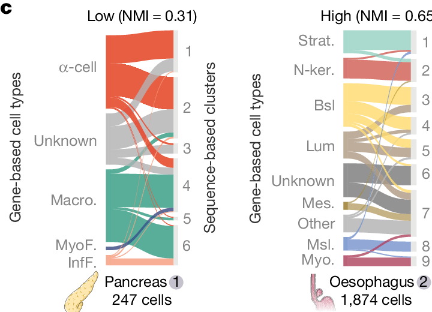
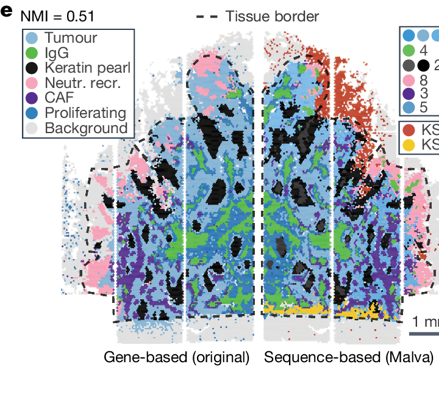
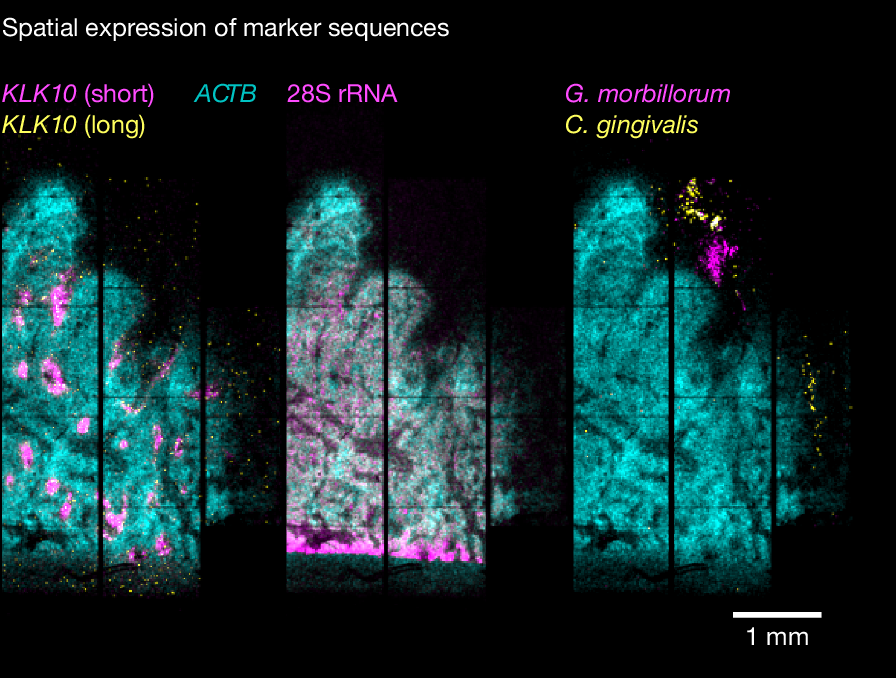

MIG Journal Club: MALVA for sequence pattern discovery from scRNA-seq
8 Oct 2026
Example: DNMT3A R882H (27 bases)
CGTCTCCAACATGAGCCGCTTGGCGAG (usual)
CGTCTCCAACATGAGCCACTTGGCGAG (mutated)
G → A mutation DNMT3A c.2645G>A
This one-letter change alters amino accid 882 in DNMT3A protein (hence ‘R882H’), frequently associated with acute myeloid leukaemia (AML).
Which blood cells contain this changed sequence in their RNA?
Conventional way: single-cell DNA-seq (expensive, no post-genetic states).
But we may also want to know:
Sequence context: Berenstein et al. 2015 · R882H variant: ClinVar · Clonal haematopoiesis: Nam et al. 2023
‘Alignment’: aligned to what?
Example: Human Genome Project; Sanger sequencing, reads of 500–1000 bps.
30% from 19 others
Most other donors had European ancestry
›
One donor-derived sequence selected at each region
›
The same names and locations can be used for every sample
Reference sequence: the agreed sequence used to assign locations and compare observed DNA or RNA.
5′ marks the beginning of an RNA transcript. 3′ marks the end that carries the poly(A) tail.
UTR: untranslated region
Paper, Fig. 3d and Limitations · Nam et al. 2023
Engineering tour de force: using conventional approaches we can probably do single-cell seq search on one dataset, not at this scale.
Paper, Introduction, Figs. 1–2 and Fig. 5
Reference allele: G
The base present in the selected reference sequence
Alternative allele: A
Another sequence observed at the same location
Allele
One sequence version at a genomic location
Genotype
The two alleles carried by one individual
Wild type
A context-dependent functional or conventional baseline
DNMT3A c.2645G>A: ClinVar · Definitions: NHGRI Allele
Any sequence difference
›
A single-nucleotide variant changes one base
›
An SNV present in ≥1% of a population
Molecular description
SNV describes the size of the sequence difference.
Population description
SNP adds information about population frequency.
Germline variant
Present from conception and potentially throughout the body
Can be inherited
Somatic variant
Arises after conception in one cell
Restricted to that cell and its descendants
Clonal somatic variant
Variant descendants expand into a cell population
Example: clonal haematopoiesis
Paper case 1 Population germline variationPaper case 3 Cancer somatic mutations
NHGRI Human Genomic Variation · Clonal haematopoiesis: Nam et al. 2023
Can atlas RNA data recover known population variants?

León-Periñán et al., Nature 2026, Fig. 3b
Can known tumour mutations be found in single-cell RNA?
Paper, Fig. 4 and “Querying cancer somatic mutations at scale”

Across cancer types: high specificity and mean sensitivity around 0.94. Splice-proximal variants were harder to recover.
This benchmark tests retrieval of supplied mutations. Clone inference needs multiple informative loci and independent checks.
León-Periñán et al., Nature 2026, Fig. 4a–c
splicing ↓
Isoform 1 · exon A included
Junctions: exon 1–A and exon A–3
Isoform 2 · exon A skipped
Junction: exon 1–3
Transcript
An RNA molecule produced from a gene
Splice junction
The sequence spanning two joined exon edges
Isoform
One transcript structure produced from a gene
Ptprc exon A example: paper, Fig. 4
Same gene
similar total counts
≠
Same transcript
different exons or 3′ ends
Paper, Fig. 3c–d

B cells show stronger inclusion of exon A than the other immune populations.
Gene totals conceal this exon-level contrast.
Coverage supports exon usage. Full-length isoform assignment needs evidence across the transcript.
León-Periñán et al., Nature 2026, Fig. 3c

The distal 3′ UTR signal localises to developing neural tissue; the proximal form accumulates in liver.
Spatial context explains the apparent developmental shift in bulk profiles.
León-Periñán et al., Nature 2026, Fig. 3d

The same reads can support a gene-count representation or a sequence-derived representation.
Malva groups related k-mers into buckets, then builds an embedding for neighbours and clusters.
León-Periñán et al., Nature 2026, Fig. 5a; Methods: bucketing approach

Agreement varies by tissue and assay

Low and high clustering concordance
Shared structure recovers familiar populations. Divergent clusters need biological evidence before interpretation.
León-Periñán et al., Nature 2026, Fig. 5b–c and Extended Data Fig. 10

Sequence-derived clusters preserve tissue structure

Assembled markers localise within and outside the tissue
KLK10 short-form signal localised within tumour regions; bacterial rRNA markers appeared outside the tissue.
León-Periñán et al., Nature 2026, Fig. 5e,h
Three possible extensions:
Data integration
Sequence features alongside gene counts; improvement on a defined task
Lineage tracing
Mutation panel; combined evidence across loci and cells
HCA survey
Clonal haematopoiesis variants in suitable public samples
Discussion proposals; not applications validated in this paper
scRNA-seq cannot cover
Example: DNMT3A R882H hard to capture using 3’ methods